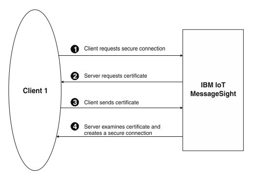

Client certificate authentication
Client authentication occurs when Eclipse Amlen requests a certificate from a client to verify that the client is who it claims to be.
You can enable the use of client certificate authentication in your security profile by setting UseClientCertificate to true. For more information about editing your security profile, see Configuring security.
The certificate must be an X.509 certificate and signed by a certificate authority (CA) trusted by Eclipse Amlen. For more information about certificates and CA, see Digital certificates. When Eclipse Amlen requests a certificate, the client sends its certificate. You can configure Eclipse Amlen to allow the connection if the client's certificate is trusted.

- The client sends a request for an SSL session to Eclipse Amlen.
- The client receives the Eclipse Amlen server certificate and checks this certificate against a list of trusted CAs. As the server certificate is signed by a trusted CA, the client accepts the certificate. Eclipse Amlen then asks the client for a certificate that identifies that client.
- The client sends its certificate.
- Eclipse Amlen checks its list of trusted certificates. Trusted certificates are stored in the Eclipse Amlen truststore. The system administrator can upload or remove individual trusted certificates from this store. If the client certificate is trusted, the secure session is established. For more information about uploading or deleting trusted certificates, see Configuring security.
For extra security, you can Use Password Authentication to request a valid user ID and password from the client when that client connects.
When a certificate expires, follow the renewal procedures that are specified by the CA for that certificate. For more information about configuring client certificates, see Configuring client certificates .
Using the identity of a client certificate for authentication and authorization
You can use the common name that is contained in a client certificate to restrict access to Eclipse Amlen. For example, if a device has a certificate that is burned in at the factory, you can use the unique common name in the certificate to ensure that only certain devices can connect, or can perform particular messaging actions.
In a connection policy, you can use the substitution variable ${CommonName} to specify that the client ID must match the client certificate common name. In a messaging policy, you can use the substitution variable ${CommonName} in the Topic, Subscription, or Queue field, depending on the type of messaging policy, to ensure that only the device with that common name can access a particular topic. For more information about configuring connection policies and messaging policies, see Configuring message hubs.
- Upload a server certificate to the server, and create a certificate profile. The server certificate identifies Eclipse Amlen as a trusted system for the clients to connect to. For more information, see Configuring certificate profiles.
- Create a security profile that uses the certificate profile and specifies to use client certificate authentication. For more information, see Configuring security profiles.
- For each client device, create certificates with unique common names.
- Import the root CA certificate, any intermediate CA certificates, and client certificates to the Eclipse Amlen truststore, and associate them with the security profile. These certificates ensure that Eclipse Amlen trusts the client certificate. For more information, see Configuring client certificates.
- Create a message hub with the following components:
- A connection policy that specifies that the Client ID must be
${CommonName} - A messaging policy. The policy can optionally use
${CommonName}in theTopic,Subscription, orQueuefield, depending on the type of messaging policy. - An endpoint that is associated with the connection policy, messaging policy, and security profile that you created.
- A connection policy that specifies that the Client ID must be
- Connect the client devices, and send messages.